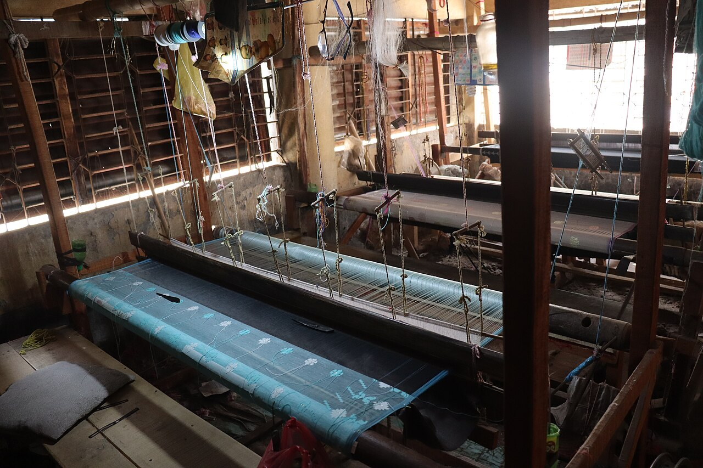

Notice boardনোটিশ বোর্ড
- Urgentজরুরি Diploma admission 2026–27: entrance test result will be published on 30 Octoberডিপ্লোমা ভর্তি ২০২৬–২৭: প্রবেশিকা পরীক্ষার ফল ৩০ অক্টোবর প্রকাশিত হবে
- Online applications open for Textile Vocational (SSC Vocational) 2027টেক্সটাইল ভোকেশনাল (এসএসসি ভোকেশনাল) ২০২৭-এ অনলাইন আবেদন শুরু
- Diploma semester final examination routine — January 2027ডিপ্লোমা সেমিস্টার সমাপনী পরীক্ষার রুটিন — জানুয়ারি ২০২৭
- Academic calendar 2027 for all textile institutesসকল টেক্সটাইল ইনস্টিটিউটের একাডেমিক ক্যালেন্ডার ২০২৭
- Teacher training on the live attendance system — schedule by divisionলাইভ হাজিরা সিস্টেমে শিক্ষক প্রশিক্ষণ — বিভাগভিত্তিক সময়সূচি
- Annual asset verification: institutions must submit by 31 Octoberবার্ষিক সম্পদ যাচাই: ৩১ অক্টোবরের মধ্যে প্রতিষ্ঠানগুলোকে জমা দিতে হবে
- Urgentজরুরি Diploma admission 2026–27: entrance test result will be published on 30 Octoberডিপ্লোমা ভর্তি ২০২৬–২৭: প্রবেশিকা পরীক্ষার ফল ৩০ অক্টোবর প্রকাশিত হবে
- Online applications open for Textile Vocational (SSC Vocational) 2027টেক্সটাইল ভোকেশনাল (এসএসসি ভোকেশনাল) ২০২৭-এ অনলাইন আবেদন শুরু
- Diploma semester final examination routine — January 2027ডিপ্লোমা সেমিস্টার সমাপনী পরীক্ষার রুটিন — জানুয়ারি ২০২৭
- Semester 2 results published — Diploma in Textile Engineeringসেমিস্টার ২-এর ফল প্রকাশ — ডিপ্লোমা ইন টেক্সটাইল ইঞ্জিনিয়ারিং
- 59৫৯Textile institutionsটেক্সটাইল প্রতিষ্ঠান
- 38,420৩৮,৪২০Students enrolledঅধ্যয়নরত শিক্ষার্থী
- 2,146২,১৪৬Teachers and instructorsশিক্ষক ও প্রশিক্ষক
- 6,815৬,৮১৫Graduates in 2025২০২৫ সালে উত্তীর্ণ
- 6৬Programmes offeredচালু প্রোগ্রাম
Quick servicesদ্রুত সেবা
Admission 2026–27ভর্তি ২০২৬–২৭
| Online applicationঅনলাইন আবেদন | 01–31 Aug 2026০১–৩১ আগস্ট ২০২৬ | Doneসম্পন্ন |
|---|---|---|
| Application feeআবেদন ফি | By 31 Aug 2026By ৩১ আগস্ট ২০২৬ | Doneসম্পন্ন |
| Entrance testভর্তি পরীক্ষা | 20 Sep 2026২০ সেপ্টেম্বর ২০২৬ | Doneসম্পন্ন |
| Result publicationফলাফল প্রকাশ | 30 Oct 2026৩০ অক্টোবর ২০২৬ | Nextপরবর্তী |
| Institution allocationপ্রতিষ্ঠান বরাদ্দ | 05 Nov 2026০৫ নভেম্বর ২০২৬ | |
| Final admissionচূড়ান্ত ভর্তি | 10–20 Nov 2026১০–২০ নভেম্বর ২০২৬ |
Application ID → student ID after final admission.চূড়ান্ত ভর্তির পর আবেদন আইডি → শিক্ষার্থী আইডি।
Verify a certificateসনদ যাচাই
About the systemসিস্টেম সম্পর্কে

The Textile Institution Management System is the official platform of the Department of Textiles. It connects the Ministry, 8 divisions, 47 districts and 59 institutions in one database.টেক্সটাইল প্রতিষ্ঠান ব্যবস্থাপনা সিস্টেম বস্ত্র অধিদপ্তরের অফিসিয়াল প্ল্যাটফর্ম। এটি মন্ত্রণালয়, ৮ বিভাগ, ৪৭ জেলা ও ৫৯টি প্রতিষ্ঠানকে একটি ডেটাবেসে যুক্ত করে।
- Online admission and resultsঅনলাইনে ভর্তি ও ফলাফল
- Live attendance from every institutionপ্রতিটি প্রতিষ্ঠান থেকে লাইভ হাজিরা
- Student services and approvals onlineঅনলাইনে শিক্ষার্থী সেবা ও অনুমোদন
- Budget, assets and reports for the Ministryমন্ত্রণালয়ের জন্য বাজেট, সম্পদ ও প্রতিবেদন
Public dashboardপাবলিক ড্যাশবোর্ড Demo dataডেমো তথ্য
| Divisionবিভাগ | Institutionsপ্রতিষ্ঠান | Studentsশিক্ষার্থী | Attendance todayআজ উপস্থিতি |
|---|---|---|---|
| Dhakaঢাকা | 13১৩ | 9,840৯,৮৪০ | |
| Chattogramচট্টগ্রাম | 9৯ | 6,120৬,১২০ | |
| Rajshahiরাজশাহী | 8৮ | 5,210৫,২১০ | |
| Khulnaখুলনা | 7৭ | 4,380৪,৩৮০ | |
| Barishalবরিশাল | 5৫ | 2,960২,৯৬০ | |
| Sylhetসিলেট | 4৪ | 2,140২,১৪০ | |
| Rangpurরংপুর | 8৮ | 4,650৪,৬৫০ | |
| Mymensinghময়মনসিংহ | 5৫ | 3,120৩,১২০ | |
| Totalমোট | 59৫৯ | 38,420৩৮,৪২০ | 85.1%৮৫.১% |
Noticesনোটিশ
All noticesসকল নোটিশNo notices in this category on the first page. Open “All notices” to search the archive.প্রথম পাতায় এই বিভাগে কোনো নোটিশ নেই। আর্কাইভে খুঁজতে “সকল নোটিশ” খুলুন।
Photo galleryফটো গ্যালারি
Fabric Day exhibition by textile engineering studentsটেক্সটাইল ইঞ্জিনিয়ারিং শিক্ষার্থীদের ফেব্রিক ডে প্রদর্শনী
Weaving practical in a loom workshopলুম ওয়ার্কশপে বয়ন ব্যবহারিক
Industry attachment: garment quality inspectionশিল্প সংযুক্তি: পোশাকের মান যাচাই
Textile museum and learning resource centreটেক্সটাইল জাদুঘর ও শিখন সম্পদ কেন্দ্র
Screen-printing training for apparel studentsঅ্যাপারেল শিক্ষার্থীদের স্ক্রিন প্রিন্টিং প্রশিক্ষণ
Handloom heritage workshopতাঁত ঐতিহ্য কর্মশালা
Help and supportসহায়তা
Frequently asked questionsসাধারণ জিজ্ঞাসা
How do I apply for admission?কীভাবে ভর্তির আবেদন করব?
Open Admissions, choose your programme and fill in the online form. You will receive an application ID by SMS.ভর্তি অংশে গিয়ে প্রোগ্রাম বেছে অনলাইন ফরম পূরণ করুন। এসএমএসে একটি আবেদন আইডি পাবেন।
I lost my application ID. What should I do?আবেদন আইডি হারিয়ে ফেলেছি। কী করব?
Use "Forgot application ID" on the candidate sign-in page with your mobile number and date of birth.প্রার্থী লগইন পাতায় "আবেদন আইডি ভুলে গেছি" থেকে মোবাইল নম্বর ও জন্মতারিখ দিয়ে উদ্ধার করুন।
When does my candidate ID become a student ID?প্রার্থী আইডি কখন শিক্ষার্থী আইডি হবে?
After final admission is complete at the allocated institution. Your account moves to the student portal automatically.বরাদ্দকৃত প্রতিষ্ঠানে চূড়ান্ত ভর্তি সম্পন্ন হলে। আপনার অ্যাকাউন্ট স্বয়ংক্রিয়ভাবে স্টুডেন্ট পোর্টালে যাবে।
User guidesব্যবহার নির্দেশিকা
Video tutorialsভিডিও টিউটোরিয়াল
Help deskহেল্প ডেস্ক
16xxx১৬xxx
help@tims.gov.bd
Sunday–Thursday, 9:00–17:00রবিবার–বৃহস্পতিবার, ৯:০০–১৭:০০